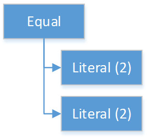
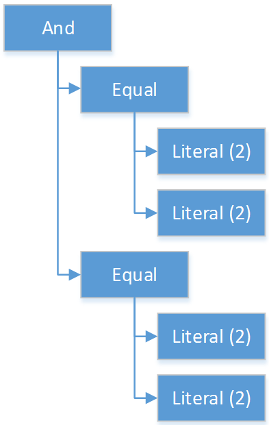
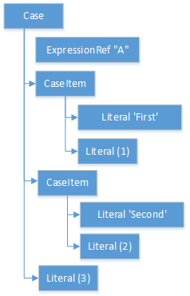

Clinical Quality Language Release 1 STU2 (w/ Errata) (1.2.1)
| Clinical Decision Support Work Group | Maturity Level: 4 | Ballot Status: STU 2.1 |
This chapter describes the Expression Logical Model (ELM) and how it is used to represent clinical knowledge within a quality artifact.
The ELM defines a mechanism for representing artifact logic independent of syntax and special-purpose constructs introduced at the syntactic level. ELM is equivalent to CQL syntax in terms of expressive power: every possible expression in CQL has an equivalent canonical-form expression in ELM. Higher-level constructs such as timing phrases and implicit conversions are represented in terms of the more primitive operators in ELM. This takes the burden of interpretation of higher-level constructs off of implementers, allowing them to focus on the implementation of a more primitive set of functionality.
Expressions within ELM are represented as Abstract Syntax Trees. ELM defines the base Expression class, and all language elements and operators are then defined as descendants of the base Expression. For example, the Add class descends from BinaryExpression, which introduces two operands, each of type Expression. The Literal class descends from Expression and allows primitive-typed values such as strings and integers to be represented directly. Using these classes, the expression 2 + 2 can be represented as instances of the appropriate classes:

Figure 4‑A
By combining instances of the appropriate classes of ELM, the logic for any expression can be represented. Note that the type of the expression can be inferred from the representation, Integer in this example.
The ELM consists of the following components:
Expression – This component defines the core structures for representing expressions, as well as the operations available within those expressions.
Clinical Expression – This component extends the Expression component to introduce expressions specific to the clinical quality domain.
Library – This component defines the structure of a library, the container, and the basic unit of sharing.
Each of these components is defined fully within the ELM UML model. This model is defined formally as an XMI, and the model definition is also presented as an Enterprise Architect Project file (.eap) for viewing.
The documentation provided here serves only as a high-level structural reference for the ELM. The actual content of the specification is defined by the XMI file, and that provides the “source-of-truth” for the ELM specification.
Note that the semantics for the operations described here are defined both in the UML model as comments on the node for each operator, as well as the equivalent CQL operation as defined in Appendix B – CQL Reference.
The ELM Expression component defines a mechanism for representing the structure of logic. The following table lists the core elements defined by the ELM:
| Expression | Description |
|---|---|
Expression |
Abstract base class for all expressions in ELM |
UnaryExpression |
Abstract base class for unary expressions in ELM |
BinaryExpression |
Abstract base class for binary expressions in ELM |
TernaryExpression |
Abstract base class for ternary expressions in ELM |
NaryExpression |
Abstract base class for n-ary expressions in ELM |
Table 4‑A
Every expression in ELM is represented as a descendant of the abstract base element Expression. In addition, several abstract descendants are introduced to support the representation of unary, binary, ternary, and n-ary operators. Note that an expression need not descend from one of these descendants, it may descend from Expression directly.
Support for simple values is provided by the Literal class. This class defines properties to represent the type of the value, as well as the value itself.
The following table lists the simple value classes available in ELM:
| Expression | Description |
|---|---|
Literal |
Represents simple value literals |
Table 4‑B
The Literal class is used to represent values for simple primitive types: Boolean, String, Integer, Decimal, DateTime, and Time.
The result type of a Literal is the type of the primitive being represented.
For more information on the primitive types, see the Types section in the CQL Reference.
ELM defines a standard set of comparison operators for use with simple values. Each comparison operator takes two arguments of the same type, and returns a boolean indicating the result of the comparison. Note that for comparison operators, if either or both operands evaluate to null, the result of the comparison is null, not false.
The following table lists the comparison operators available in ELM:
| Expression | Description |
|---|---|
Equal |
Returns true if the operands are equal |
Equivalent |
Returns true if the operands are equivalent |
NotEqual |
Returns true if the operands are not equal |
Less |
Returns true if the first operand is less than the second operand |
LessOrEqual |
Returns true if the first operand is less than or equal to the second operand |
Greater |
Returns true if the first operand is greater than the second operand |
GreaterOrEqual |
Returns true if the first operand is greater than or equal to the second operand |
Table 4‑C
The following example illustrates a simple Equal comparison:

Figure 4‑B
For more information on the semantics of the various comparison operators, see the Comparison Operators section of the CQL Reference.
ELM defines logical operators that can be used to combine the results of logical expressions. And and Or can be used to combine any number of results, and Not can be used to invert the result of any expression.
Note that these operators are defined with 3-valued logic semantics, allowing the operators to deal consistently with missing information.
The following table lists the logical operators available in ELM:
| Expression | Description |
|---|---|
And |
Returns the logical conjunction of its operands |
Or |
Returns the logical disjunction of its operands |
Not |
Returns the logical negation of its operand |
Implies |
Returns the logical implication of its operands |
Xor |
Returns the exclusive or of its operands |
Table 4‑D
The following example illustrates a simple And expression:

Figure 4‑C
For more information on the semantics of these operators, refer to the Logical Operators section in the CQL Reference.
ELM defines several nullological operators that are useful for dealing with potentially missing information. These are Null, IsNull, IsTrue, IsFalse, and Coalesce.
The following table lists the logical operators available in ELM:
| Expression | Description |
|---|---|
Null |
Returns a typed null |
IsNull |
Returns true if the argument is null, false otherwise |
IsTrue |
Returns true if the argument is true, false otherwise |
IsFalse |
Returns true if the argument is false, false otherwise |
Coalesce |
Returns the first non-null argument, null if there are no non-null arguments |
Table 4‑E
For more information on the semantics of these operators, refer to the Nullological Operators section in the CQL Reference.
ELM defines several conditional expressions that can be used to return different values based on a condition, or set of conditions. These are the If (conditional) expression, and the Case expression.
The conditional expression allows a simple condition to be used to decide between one expression or another.
The case expression has two varieties, one that is equivalent to repeated conditionals, and one that allows a specific comparand to be identified and compared with each item to determine a result.
The following table lists the conditional operators available in ELM:
| Expression | Description |
|---|---|
If |
Allows for conditional evaluation between two expressions. |
Case |
Allows for multiple conditional expressions, or a comparand with multiple cases. |
Table 4‑F
The following examples illustrates a simple If expression (i.e. if / then / else):
Figure 4‑D
The following example illustrates a more complex multi-conditional Case expression:

Figure 4‑E
And finally, an equivalent comparand-based Case expression:

Figure 4‑F
ELM provides a complete set of arithmetic operators to allow for manipulation of integer and real values within artifacts. In general, these operators have the expected semantics for arithmetic operators.
Note that if an operand evaluates to null, the result of the operation is defined to be null. This provides consistent semantics when dealing with missing information.
The following table lists the arithmetic operators available in ELM:
| Expression | Description |
|---|---|
Add |
Performs numeric addition of its arguments |
Subtract |
Performs numeric subtraction of its arguments |
Multiply |
Performs numeric multiplication of its arguments |
Divide |
Performs numeric division of its arguments |
TruncatedDivide |
Performs integer division of its arguments |
Modulo |
Computes the remainder of the division of its arguments |
Ceiling |
Returns the first integer greater than or equal to its argument |
Floor |
Returns the first integer less than or equal to its argument |
Truncate |
Returns the integer component of its argument |
Abs |
Returns the absolute value of its argument |
Negate |
Returns the negative value of its argument |
Round |
Returns the nearest numeric value to its argument, optionally specified to a number of decimal places for rounding |
Ln |
Computes the natural logarithm of its argument |
Log |
Computes the logarithm of its first argument, using the second argument as the base |
Exp |
Raises e to the power given by its argument |
Power |
Raises the first argument to the power given by the second argument |
Successor |
Returns the successor of its argument |
Predecessor |
Returns the predecessor of its argument |
MinValue |
Returns the minimum representable value for a type |
MaxValue |
Returns the maximum representable value for a type |
Table 4‑G
The following example illustrates a simple Add expression:

Figure 4‑G
For more information on the semantics of these operators, refer to the Arithmetic Operators section in the CQL Reference.
ELM defines a set of string operators to allow for manipulation of string values within artifact definitions.
Indexes within strings are defined to be 0-based.
Note that except as noted within the documentation for each operator, if any argument evaluates to null, the result of the operation is also defined to be null.
The following table lists the string operators available in ELM:
| Expression | Description |
|---|---|
Concatenate |
Returns the concatenation of its arguments |
Combine |
Combines a list of strings, optionally separating them with the given separator |
StartsWith |
Returns true if the string starts with a given prefix |
EndsWith |
Returns true if the string ends with a given suffix |
Split |
Splits a string into a list of strings along a given separator |
LastPositionOf |
Returns the starting position of the last appearance of a given pattern |
Length |
Returns the length of its argument |
Matches |
Returns true if the string matches a given regular expression pattern |
ReplaceMatches |
Replaces matches of a given pattern with a given substitution |
Upper |
Returns the upper case representation of its argument |
Lower |
Returns the lower case representation of its argument |
Indexer |
Returns the nth character of its argument |
PositionOf |
Returns the starting position of a given pattern within a string |
Substring |
Returns a substring of its argument |
Table 4‑H
For more information on the semantics of these operators, refer to the String Operators section in the CQL Reference.
ELM defines several operators for representating the manipulation of date and time values. These operators are defined using a common precision type that allows the various precisions (e.g. day, month, week, hour, minute, second) of time to be manipulated.
Except as noted within the documentation for each operator, if any argument evaluates to null, the result of the operation is also defined to be null.
The following table lists the date and time operators available in ELM:
| Expression | Description |
|---|---|
DateTimeComponentFrom |
Returns a specified component of its argument |
Today |
Returns the date (with no time components specified) of the start timestamp associated with the evaluation request |
Now |
Returns the date and time of the start timestamp associated with the evaluation request |
TimeOfDay |
Returns the time-of-day of the start timestamp associated with the evaluation request |
DateTime |
Constructs a date/time value from its arguments |
Time |
Constructs a time value from its arguments |
DateFrom |
Returns the date (with no time component) of the argument |
TimeFrom |
Returns the time of the argument |
TimezoneFrom |
Returns the timezone offset (in hours) of the argument |
SameAs |
Performs precision-based equality comparison of two date/time values |
SameOrBefore |
Performs precision-based less-or-equal comparison of two date/time values |
SameOrAfter |
Performs precision-based greater-or-equal comparison of two date/time values |
Before |
Performs precision-based less-than comparison of two date/time values |
After |
Performs precision-based greater-than comparison of two date/time values |
DurationBetween |
Computes the number of whole periods between two dates |
DifferenceBetween |
Computes the number of whole period boundaries crossed between two dates |
Table 4‑I
For more information on the semantics of these operators, refer to the Date/Time Operators section in the CQL Reference.
ELM defines a complete set of operators for use in defining and manipulating interval values.
Constructing an interval is performed with the Interval expression, which allows the beginning and ending of the interval to be specified, as well as whether the interval beginning and ending is exclusive (open), or inclusive (closed).
ELM defines support for basic operations on intervals including determining length, accessing interval properties, and determining interval boundaries.
ELM also supports complete operations involving comparisons of intervals, including equality, membership testing, and inclusion testing.
In addition, the language supports operators for combining and manipulating intervals.
The following table provides a complete listing of the interval operators available in ELM:
| Expression | Description |
|---|---|
Interval |
Constructs a new interval value |
Equal |
Returns true if the arguments are the same interval |
NotEqual |
Returns true if the arguments are not the same interval |
Equivalent |
Returns true if the intervals are equivalent |
Contains |
Returns true if the interval contains the given point |
In |
Returns true if the given point is in the interval |
Includes |
Returns true if the first interval completely includes the second (i.e., starts on or before and ends on or after) |
IncludedIn |
Returns true if the first interval is completely included in the second (i.e., starts on or after and ends on or before) |
ProperIncludes |
Returns true if the first interval completely includes the second and the first interval is strictly larger (i.e., includes and not equal) |
ProperIncludedIn |
Returns true if the first interval is completely included in the second and the second interval is strictly larger (i.e., included in and not equal) |
Before |
Returns true if the first interval ends before the second one starts |
After |
Returns true if the first interval starts after the second one ends |
SameOrBefore |
Returns true if the first interval ends on or before the second one starts |
SameOrAfter |
Returns true if the first interval starts on or after the second one ends |
Meets |
Returns true if the first interval ends immediately before the second interval starts, or if the first interval starts immediately after the second interval ends |
MeetsBefore |
Returns true if the first interval ends immediately before the second interval starts |
MeetsAfter |
Returns true if the first interval starts immediately after the second interval ends |
Overlaps |
Returns true if the first interval overlaps the second |
OverlapsBefore |
Returns true if the first interval starts before and overlaps the second |
OverlapsAfter |
Returns true if the first interval ends after and overlaps the second |
Union |
Returns the interval that results from combining the arguments |
Intersect |
Returns the interval that results from the intersection of the arguments |
Except |
Returns the interval that results from subtracting the second interval from |
Length |
Returns the length of the interval |
Start |
Returns the starting point of the interval |
End |
Returns the ending point of the interval |
Starts |
Returns true if the first interval starts the second |
Ends |
Returns true if the first interval ends the second |
Collapse |
Returns the unique set of intervals that completely cover the range covered by the given intervals |
Width |
Returns the width of the interval |
PointFrom |
Extracts a single point from a unit interval. If the interval is wider than one, an error is thrown |
Table 4‑J
Note that ELM does not include a definition for During because it is synonymous with IncludedIn.
For more information on the semantics of these operators, refer to the Interval Operators section in the CQL Reference.
Structured values in ELM are values with sets of named elements (tuples), each of which may have a value of any type. Structured values are most commonly used to represent clinical information such as encounters, problems, and procedures.
The Tuple class represents construction of a new structured value, with the values for each element supplied by TupleElement instances.
To access elements of a structured value, use the Property expression. A property expression has a path attribute, an optional source element, and a value element. The source element returns the structured value to be accessed. In some contexts, such as within a Filter expression, the source is implicit. If used outside such a context, a source must be provided.
The path attribute specifies a property path relative to the source structured value. The property expression returns the value of the property specified by the property path. Property paths are allowed to include qualifiers (.) as well as indexers ([x]) to indicate that subelements should be traversed. Indexers specified in paths must be literal integer values.
The following table lists the structured value operators available in ELM:
| Expression | Description |
|---|---|
Tuple |
Constructs a new tuple value |
Instance |
Constructs a new instance of a structured value |
Property |
Returns the value of an element of a structured value |
Equal |
Returns true if its arguments are equal |
NotEqual |
Retruns true if its arguments are not equal |
Equivalent |
Returns true if its arguments are equivalent |
Table 4‑K
The following example illustrates the construction of a tuple using the Tuple class:
Figure 4‑H
The following example illustrates the construction of a structured value using the Instance class:

Figure 4‑I
ELM allows for the expression and manipulation of lists of values of any type. The most basic list operation is the List class, which represents a simple list selector.
Basic list operations include testing for membership, indexing, and content. ELM also supports comparison of lists, including equality and inclusion determination (subset/superset). Supported operations on single lists include filtering, sorting, and computation. For multiple lists, ELM supports combining through union and intersection, as well as computing the difference.
The use of the scope attribute allows for more complex expressions such as correlated subqueries.
ELM also supports a flattening operator, Flatten to construct a single list from a list of lists.
The following table provides a complete listing of the list operators available in ELM:
| Expression | Description |
|---|---|
List |
Constructs a list from its arguments |
Exists |
Returns true if its argument contains any elements |
Equal |
Returns true if its arguments have the same number of elements, and for each element considered in order, the elements are equal |
NotEqual |
Returns true if its arguments are not equal |
Equivalent |
Returns true if its arguments are equivalent |
Union |
Returns a list containing all the unique elements of its arguments |
Except |
Returns a list containing only the elements in the first list that are not in the second list |
Intersect |
Returns a list containing only the elements that are in all of its arguments |
Times |
Combines the elements from two lists, returning a list with an element for each possible combination of elements from the source list. |
Filter |
Returns a list containing only the elements for which the given condition evaluates to true |
SingletonFrom |
Extracts the single element from a list with at most one element. |
IndexOf |
Returns the 0-based index of an element within the list, or 0 if the element is not present |
Indexer |
Returns the element at the given 0-based index in the list |
In |
Returns true if the given element is in a given list |
Contains |
Returns true if the given list contains a given element |
Includes |
Returns true if every element in the second list is in the first list |
IncludedIn |
Returns true if every element in the first list is in the second list |
ProperIncludes |
Returns true if every element in the second list is in the first list, and the first list is strictly larger than the second |
ProperIncludedIn |
Returns true if the second list contains every element in the first list, and the second list is strictly larger than the first |
Sort |
Returns a list with the same elements, sorted by the given sort criteria |
ForEach |
Returns a list whose elements are determined by evaluating a given expression for each element in its argument |
Flatten |
Flattens a list of lists into a single list with all the elements from every list in the input. Duplicates are not eliminated by this operation |
Distinct |
Returns a list that contains the unique elements within its argument |
Current |
Returns the contents of the current scope |
First |
Returns the first element in the given list |
Last |
Returns the last element in the given list |
Slice |
Returns a portion of the elements in the given list, beginning at a startIndex and ending just before an endIndex |
Repeat |
Returns a list whose elements are determined by evaluating a given expression for each element in the argument, and repeating the evaluation on the resulting list until no new elements are returned |
Table 4‑L
For more information on the semantics of these operators, refer to the List Operators section in the CQL Reference.
For computing aggregate quantities, ELM defines several aggregate operators. These operators perform computations on lists of values, either on the elements of the list directly, or on a specific property of each element in the list.
Unless noted in the documentation for each operator, aggregate operators deal with missing information by excluding elements which have no value before performing the aggregation. In addition, an aggregate operation performed over an empty list is defined to return null, except as noted in the documentation for each operator (e.g. Count).
The following table lists the aggregate operators available in ELM:
| Expression | Description |
|---|---|
Count |
Returns the number of non-null elements in the source |
Sum |
Computes the sum of non-null elements in the source |
Min |
Returns the minimum element in the source |
Max |
Returns the max element in the source |
Avg |
Returns the average of the elements in the source |
Median |
Returns the median of the elements in the source |
Mode |
Returns the mode of the elements in the source |
Variance |
Returns the statistical variance of the elements in the source |
PopulationVariance |
Returns the population variance of the elements in the source |
StdDev |
Returns the standard deviation of the elements in the source |
PopulationStdDev |
Returns the population standard deviation of the elements in the source |
AllTrue |
Returns true if all the non-null elements in source are true |
AnyTrue |
Returns true if any non-null element in source is true |
Table 4‑M
For more information on the semantics of these operators, refer to the Aggregate Functions section in the CQL Reference.
ELM provides the following elements for type specifiers, testing, casting, and conversion:
| Element | Description |
|---|---|
Is |
Returns true if the type of the argument is the given type |
As |
Returns the argument as the type if it is of the given type, null otherwise |
Convert |
Returns the argument converted to the given type, if possible. If no conversion is possible, a run-time error is thrown |
NamedTypeSpecifier |
Specifies a named type |
IntervalTypeSpecifier |
Specifies an interval type |
ListTypeSpecifier |
Specifies a list type |
TupleTypeSpecifier |
Specifies a tuple type |
Children |
Returns the values of all immediate children of the source |
Descendents |
Returns the values of all children of the source, recursively |
Table 4‑N
For more information on the semantics of these operators, refer to the Type Operators section in the CQL Reference.
ELM provides a mechanism for expressing the structure of a query using the following classes:
| Class | Description |
|---|---|
Query |
Defines a query in ELM, containing clauses as defined by the other elements in this section. |
AliasedQuerySource |
The AliasedQuerySource element defines a single source for inclusion in the query context. The type of the source is determined by the expression element, and the source can be accessed within the query context by the given alias. |
LetClause |
The LetClause element allows any number of expression definitions to be introduced within a query context. Defined expressions can be referenced by name within the query context. |
With |
The With clause restricts the elements of a given source to only those elements that have elements in the related source that satisfy the suchThat condition. This operation is known as a semi-join in database languages. |
Without |
The Without clause restricts the elements of a given source to only those elements that do not have elements in the related source that satisfy the suchThat condition. This operation is known as a semi-difference in database languages. |
SortClause |
The SortClause element defines the sort order for the query, and is made up of any number of elements that are descendants of the SortByItem class (ByDirection, ByColumn, or ByExpression). |
ByDirection |
Indicates that the sort should be performed ascending or descending. This sortByItem can only appear by itself in a sort clause, and is used when the query is based on a list of non-tuple-valued elements. |
ByColumn |
Indicates that the sort should be performed based on the values of a specified column. |
ByExpression |
Indicates that the sort should be performed based on the result of an expression. |
ReturnClause |
The ReturnClause element defines the shape of the result set of the query. |
AliasRef |
Within a Query, references a defined alias |
QueryLetRef |
Within a Query, references an introduced let expression |
Table 4‑O
For more information on query semantics, refer to the Queries section of the Author’s Guide, as well as the Multi-Source Queries and Non-Retrieve Queries sections of the Developer’s Guide.
ELM provides a mechanism for reusing expressions by declaring a named expression. This construct is similar to a function call with no parameters in a traditional imperative language, with the exception that since ELM is a pure-functional system, the result of the evaluation could be cached by an implementation to avoid performing the same computation multiple times.
In addition, ELM provides a more traditional function call with named parameters that can then be accessed by the expression in the function body, and passed as part of the call from the invoking context.
The ExpressionDef class is used to define a named expression that can then be referenced by other expressions. The FunctionDef class is used to define a function and its parameters.
Note that circular expression references are not allowed, but that named expressions can be defined in any order, so long as the actual references do not result in a cycle.
The following table lists the expression definition components available in ELM:
| Expression | Description |
|---|---|
ExpressionDef |
Defines a named expression that can be referenced by other expressions |
ExpressionRef |
Returns the result of evaluating a named expression |
FunctionDef |
Defines a function that can be referenced by other expressions, or within the body of other functions. |
FunctionRef |
Returns the result of evaluating a function with the given arguments |
Table 4‑P
The ExpressionDef class introduces the notion of context which can be either Patient or Population. This context defines how the contained expression is evaluated, either with respect to a single patient, defined by the evaluation environment, or with respect to a population. For more information about patient context, please refer to the External Data section.
All access to external data within ELM is represented by Retrieve expressions.
The Retrieve class defines the data type of the request, which determines the type of elements to be returned. The result will always be a list of values of the type specified in the request.
The type of the elements to be returned is specified with the dataType attribute of the Retrieve, and must refer to the name of a type within a known data model specified in the dataModels element of the library definition.
In addition, the Retrieve introduces the ability to specify optional criteria for the request. The available criteria are intentionally restricted to the set of codes involved, and the date range involved. If these criteria are omitted, the request is interpreted to mean all data of that type.
Note that because every expression is being evaluated within a context (either Patient or Population) as defined by the containing ExpressionDef, the data returned by a retrieve depends on the context. For the Patient context, the data is returned for a single patient only, as defined by the evaluation environment. Whereas for the Population context, the data is returned for all patients.
The following table lists the expressions relevant to defining external data in ELM:
| Expression | Description |
|---|---|
Retrieve |
Defines clinical data that will be used within the artifact |
Table 4‑Q
For working with clinical data, ELM defines operators for terminology sets, quantities, and calculating age.
The following table lists the classes representing clinical information in ELM:
| Class | Description |
|---|---|
CodeSystemDef |
Defines a code system identifier that can be referenced by name |
CodeSystemRef |
References a code system by its previously defined name |
InCodeSystem |
Tests a string, code, or concept for membership in a codesystem |
ValueSetDef |
Defines a valueset identifier that can be referenced by name |
ValueSetRef |
References a valueset by its previously defined name |
InValueSet |
Tests a string, code, or concept for membership in a valueset |
CodeDef |
Defines a code identifier that can be referenced by name |
CodeRef |
References a code by its previously defined name |
ConceptDef |
Defines a concept identifier that can be referenced by name |
ConceptRef |
References a concept by its previously defined name |
Code |
Selects an existing code from a defined codesystem |
Concept |
Selects an existing concept containing a list of codes |
Quantity |
Returns a clinical quantity with a specified unit |
CalculateAge |
Calculates the age in the specified precision of a person born on the given date as of today. |
CalculateAgeAt |
Calculates the age in the specified precision of a person born on the first date as of the second date. |
Table 4‑R
In addition to external data, ELM provides a mechanism for defining parameters to an artifact. A library can define any number of parameters, each of which has a name, and a defined type, as well as an optional default value.
Parameter values, if any, are expected to be provided as part of the evaluation request, and can be accessed with a ParameterRef expression in any expression throughout the library.
The following table lists the expressions relevant to parameters in ELM:
| Expression | Description |
|---|---|
ParameterDef |
Defines a parameter to the artifact |
ParameterRef |
Returns the value of a parameter |
Table 4‑S
ELM does not reference any specific data model, and so can be used to represent logic expressed against any data model. These data models are specified using the UsingDef class. This class provides attributes for specifying the name and version of the data model. An ELM library can reference any number of models.
The name of the model is an implementation-specific identifier that provides the environment with a mechanism for finding the model description. The details of how that model description is provided are part of the physical representation.
The following table lists the elements relevant to data models in ELM:
| Element | Description |
|---|---|
UsingDef |
Defines a data model that can be used by expressions within the library |
Table 4‑T
ELM defines the notion of a library as the basic container for logic constructs. Libraries consist of sets of declarations including data model references, library references, valueset definitions, parameters, functions, and named expressions. The Library class defines this unit and defines properties for each of these types of declarations.
Once defined, libraries can then be referenced by other libraries with the IncludeDef class, which defines properties for the name and version of the library being referenced, as well as a local name that is used to access components of the library.
The following table lists the elements relevant to libraries in ELM:
| Element | Description |
|---|---|
IncludeDef |
Defines a library reference; public components of the included library can be referenced by components of the referencing library. |
VersionedIdentifier |
Defines the versioned identifier construct used to label the various declarations throughout ELM |
Table 4‑U
ELM defines a utility operation that is useful for generating run-time messages, warnings, traces, and errors. The operator is a single, general-purpose function intended to provide a single implementation point for messaging and run-time error functionality when those messages are generated from ELM logic.
| Element | Description |
|---|---|
Message |
Provides a mechanism for generating and returning messages, warnings, errors, and traces to the calling environment. |
The source parameter is always a generic value, which is always the result of the operator and is purely passthrough. This allows the operation to appear at any point in any expression of ELM.
The optional condition parameter determines whether or not the message is generated. If no condition is supplied, the default is true and the message is generated.
There is an optional code parameter which allows a coded representation of the message. (Note this is an error token such as an integer or string, not a clinical terminology Code).
There is an optional severity parameter which allows the severity of the message to be specified, one of:
Message – The operation produces an informational message that is expected to be made available in some way to the calling environment.
Warning – The operation produces a warning message that is expected to be made conspicuously available to the calling environment, potentially to the end-user of the logic.
Trace – The operation produces an informational message that is expected to be made available to a tracing mechanism such as a debug log in the calling environment.
Error – The operation produces a run-time error and return the message to the calling environment. This is the only severity that stops evaluation. All other severities continue evaluation of the expression.
If no severity is supplied, a default severity of Message is assumed.